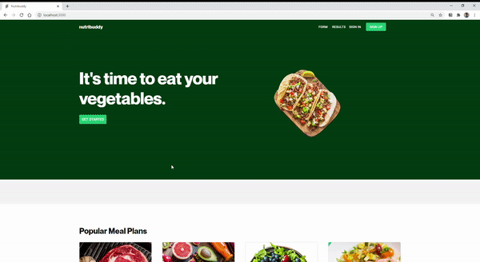
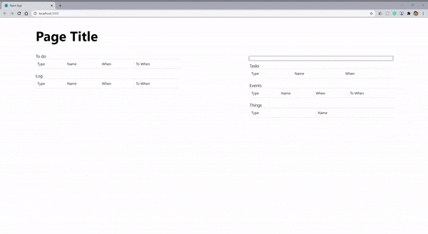

Hey! My name is Alec Chen.
I'm a budding software engineer and CS student at the University of Illinois
at Urbana-Champaign. This site is a visual collection of some things that
I've worked on. Welcome!

Runner Game
Rust WebAssembly Javascript WebGL
This project is very much still a work in progress, and I'm currently
working through the basic mechanics of the game. I'm not using a game
engine, or even a graphics library, and so working with the graphics
directly and doing everything myself makes things a bit more difficult,
but I'm really proud of my work so far. Looking forward to fleshing out
the rest of the game, and hopefully getting to multiplayer functionality.
3D Graphics Engine From Scratch
C++ Cinder
Given 3-4 weeks to just "make something" using C++ and the graphics API
Cinder, I set out to build the systems behind transforming 3D perspective
to a 2D screen. After a lot of pacing around my dorm room thinking about
matrices, I developed a system with simple lighting that could render a
first person perspective moving and looking around inside of a room, or
any 3D model made of triangles.

Nutribuddy
Javascript React Python Flask
Putting my newfound React skills to the test, I served as the frontend
developer on a nutrition recommendation web app that my group called
Nutribuddy. Working together going through the motions of agile development
methodologies and practicing proper version control to contribute to a code
base, we cranked out a pretty sleek MVP that takes in a user's dietary
preferences and restrictions, and outputs a week's worth of curated meals.

Personal Organization App
Javascript React
This was the first project I worked on while learning React. I tried to
emulate a similar concept of linked databases that my current organization
app, Notion, uses. It parses the input into the appropriate data, and then
all the tables are controlled and filtered versions of a single database.

Social Network Analysis
Python Matplotlib Networkx
Getting into network analysis through research during high school, I
thought it'd be so interesting to analyze the social network of those
around me. A year later I collected friendship data through survey
responses and wrote an article with my analysis and visualization. I
tried really hard to break down the raw statistics into more digestible
insights, and it was really cool to get responses from classmates that'd
read my piece.
Dark Mode